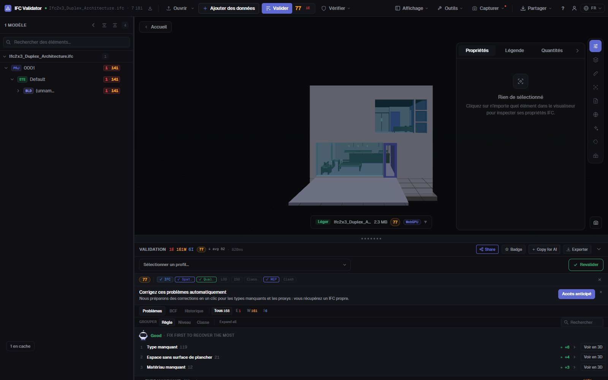
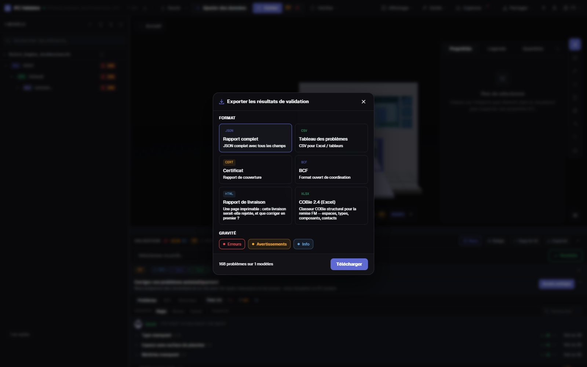

Contrôle qualité IFC
une note et un rapport en 30 s
Déposez un IFC et obtenez son Health Score de 0 à 100 selon 44 règles de qualité — GUID, structure spatiale, types, matériaux, jeux de propriétés, coordonnées — avec les trois problèmes qui coûtent le plus de points en premier. Exportez ensuite un rapport de livraison imprimable, un certificat, du BCF ou du COBie.
Contrôler la maquette — gratuit →Sans compte · Rien n’est envoyé · Dans votre navigateur · Gratuit

Ce que vous pouvez faire
Un contrôle que vous pouvez remettre
Une note pour le maître d’ouvrage, la liste complète pour l’auteur et la preuve pour la GED.
Health Score 0–100
Une note de la qualité des données de la maquette, pondérée par gravité, avec la moyenne du secteur pour comparer.
Quoi corriger d’abord
Les règles qui coûtent le plus de points, avec les points regagnés — et un bouton pour voir leurs éléments en 3D.
44 règles + IDS
GUID, hiérarchie spatiale, orphelins, types, matériaux, Psets, unités, coordonnées, collisions — et tout fichier IDS buildingSMART.
Rapport de livraison imprimable
Un rapport HTML d’une page (cette livraison serait-elle refusée, quoi corriger) qui s’imprime ou s’enregistre en PDF depuis le navigateur.
Certificat, BCF, COBie
Un certificat de couverture, des sujets BCF 2.1 pour l’auteur, CSV/JSON et un classeur COBie 2.4.
Rien n’est envoyé
Le contrôle s’exécute dans votre navigateur en WebAssembly. Sous NDA, hors ligne, sur n’importe quel ordinateur.
Captures

FAQ
Questions fréquentes
Qu’est-ce qu’un contrôle qualité de maquette IFC ?
Une revue automatique de la qualité des données d’un fichier IFC : structure, identifiants, classification, propriétés et coordonnées. IFC Viewer Online la résume en un Health Score de 0 à 100 et liste chaque problème avec l’élément concerné.
Puis-je obtenir un rapport PDF ?
Oui. Exportez le « Rapport de livraison » : un rapport HTML imprimable d’une page avec la note, les comptes de problèmes et les priorités. Ouvrez-le puis imprimez ou « Enregistrer en PDF » depuis le navigateur. Certificat JSON, CSV, BCF et COBie sont aussi disponibles.
Faut-il envoyer la maquette IFC pour la contrôler ?
Non. Contrairement aux services qui demandent un envoi, le fichier est ouvert et contrôlé dans votre navigateur ; il n’est jamais envoyé à un serveur.
Qu’est-ce qu’une bonne note ?
90–100 : prêt à livrer ; 75–89 : correct pour la coordination avec de petites corrections ; 50–74 : à reprendre avant livraison ; sous 50 : problèmes de données sérieux.
Est-ce gratuit ?
Oui, pour tout usage, y compris les projets commerciaux, sans compte et sans limite de taille payante.
Contrôlez la maquette avant votre maître d’ouvrage.
Health Score · Priorités · Rapport imprimable · BCF · COBie
Contrôler la maquette — gratuit →